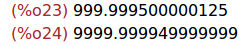
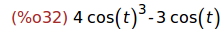

Tema CS2. Funciones de una variable
(Soluciones de ejercicios propuestos)
1 Ejercicio 1
Ejercicio 1. Sean a y b dos números reales. Se considera la función f definida
sobre R por
f(x) = (e^x-1)/x si x>0
a*x+b si x<=0
Ejercicio 1.1. Definir la función f usando el condicional if ... then ... else
(%i1)
f(x) := if x>0 then (%e^x-1)/x
else a*x+b;
Ejercicio 1.2. limit no puede evaluar comandos del tipo if...then Por ello,
para determinar el límite de f en cero por la derecha se necesita precisar
en qué intervalo se encuentra x. Esto puede hacerse con la función assume.
Escribir la expresión assume(x>0), después calcular el límite de f en cero por
la derecha. Se puede eliminar la hipótesis sobre x por forget(x>0)
(%i2) assume(x>0)$
(%i3)
limit(f(x), x, 0, plus);
(%i4) forget(x>0)$
Ejercicio 1.3. Deducir el valor de b para el que f es continua en R.
(%i5) assume(x<=0)$
(%i6)
limit(f(x), x, 0, minus);
(%i7) forget(x<=0)$
Por tanto b=1.
Ejercicio 1.4. Calcular la derivada de f en cero por la derecha.
(%i8) assume(x>0)$
(%i9)
define(dfp(x),diff(f(x),x,1));
(%i10)
limit(df(x), x, 0, plus);
(%i11) forget(x>0)$
Ejercicio 1.5. Calcular el valor de a para el que f es derivable en cero.
(%i12) assume(x<=0)$
(%i13)
define(dfm(x),diff(f(x),x,1));
Por tanto, a=1/2.
2 Ejercicio 2
Ejercicio 2. Sea g la función real definida por g(x) = 2*x-sqrt(1+x^2)
(%i14)
g(x) := 2*x-sqrt(1+x^2);
Ejercicio 2.1. Calcular los límites de g en +infito y en -infinito.
(%i15)
limit(g(x), x, inf);
(%i16)
limit(g(x), x, minf);
Ejercicio 2.2. Dibujar la gráfica de la función g.
(%i17)
wxplot2d([g(x)], [x,-50,150])$
Ejercicio 2.3. Calcular g'(x)
(%i18)
define(dg(x),diff(g(x),x,1));
Ejercicio 2.4. Resolver la ecuación g(x)=0
(%i19)
r : find_root(g(x), x, -50, 150);
Ejercicio 2.5. Determinar los intervalos de crecimiento de g.
(%i20)
define(dg2(x),diff(g(x),x,2));
(%i21)
radcan(%);
(%i22)
is(dg2(x)<0);
Por tanto, g es creciente en todo R.
Ejercicio 2.6. Calcular las ecuaciones reducidas de las asíntotas de g.
(%i23)
g(1000),numer; g(10000),numer;

(%i25)
limit(g(x)/(a*x+b), x, inf);
(%i26)
limit(g(x)/x, x, inf);
(%i27)
g(-1000),numer; g(-10000),numer;

(%i29)
limit(g(x)/(a*x+b), x, minf);
(%i30)
limit(g(x)/(3*x), x, minf);
3 Ejercicio 3
Ejercicio 3.1.1. Desarrollar cos(3t) en función de cos(t).
(%i31)
trigexpand(cos(3*t));
(%i32)
trigsimp(%);

Ejercicio 3.1.2. Desarrollar cos(4t) en función de cos(t).
(%i33)
trigexpand(cos(4*t));
(%i34)
trigsimp(%);
Ejercicio 3.1.3. Desarrollar cos(5t) en función de cos(t).
(%i35)
trigexpand(cos(5*t));
(%i36)
trigsimp(%);
Ejercicio 3.2. Determinar los polinomios Tn de la variable x tales que para
todo t en R, cos(nt) = Tn(cos t) para n en {3,4,5}.
(%i37)
T3(x) := 4*x^3- 3*x ;
T4(x) := 8*x^4- 8*x^2+1 ;
T5(x) := 16*x^5-20*x^3+5*x ;
Ejercicio 3.3. Representar las funciones T3, T4 y T5 en la misma gráfica.
(%i40)
wxplot2d([T3(x), T4(x), T5(x)], [x,-1,1])$